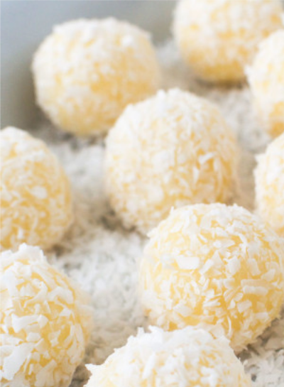

Beijinho de Coco

Description
Beijinhos de coco are an easy 4-ingredient Brazilian coconut balls recipe your family and friends will LOVE. They’re essentially coconut fudge, rolled into bite-sized balls that are sinfully sweet and delicious, cute as buttons and great for parties and holidays year round. They’re even great to make as a gift!
Ingredients
- 1 14oz can of sweet condensed milk
- 1 cup of unsweetened, shredded coconut
- tablespoon of butter plus a little more for your hands
- 1/4 cup of heavy cream
- 16 whole cloves for decorating optional
Instructions
- Add the condensed milk, the butter, and the cream to a medium sauce pan and place it over medium heat until the butter melts.
- After the butter has melted, add half of the shredded coconut (1/2 cup) to the pan and stir.
- Continue to cook over medium heat, for approximately 10 mins, stirring repeatedly, scraping the sides and the bottom of the pan with a spatula to avoid burning.
- The beijinho is ready when you scrape the bottom of the pan, and the mixture takes 2-3 seconds to come back to its place, or when the mixture reaches 210F-220F – You can use a candy thermometer, or just a regular food thermometer to check.
- Pour the hot coconut mixture into a dish, or plate, cover with plastic wrap to contact and let it cool – about 2 hours.
- Meanwhile, pour the remaining shredded coconut in a deep plate or bowl.
- When the beijinho mixture has cooled, butter your hands, and scoop 1/2 Tbsp to Tbsp portions and roll little balls.
- Roll the little balls in the shredded coconut, and insert a whole clove to each little coconut ball to decorate, if desired.
- Keep them in a cool place or in the refrigerator until serving time.